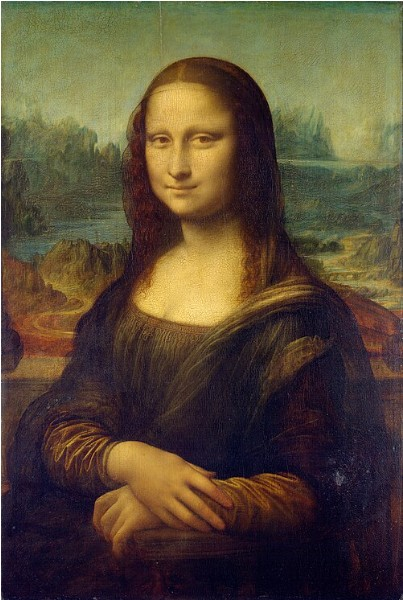

Leonardo almost never called anything finished. He started far more paintings than he completed, and even the ones he did finish, he kept coming back to, sometimes for years. One painting followed him around for much of his life. He took it on his travels, all the way to France, and was still working on it in his last years.

So why did he take so long? Part of the answer is that Leonardo genuinely believed a painter had to be a master of everything, not just faces. In his notebook he wrote:
In his own words
Certainly this is no great achievement; after studying one single thing for a life-time who would not have attained some perfection in it? But, since we know that painting embraces and includes in itself every object produced by nature or resulting from the fortuitous actions of men, in short, all that the eye can see, he seems to me but a poor master who can only do a figure well. ... And all these things ought to be regarded as of equal importance and value, by the man who can be termed a good painter.
To Leonardo, the background hills, the folds of the clothing and the faint smile all mattered exactly as much as each other. Every one of them had to be studied and re-studied, not just the parts a rushed painter might call "done enough."
Keep the mind running
He also believed that stopping, permanently, was its own kind of danger. Among his notes of sayings, he wrote himself this reminder:
In his own words
Just as iron rusts unless it is used, and water putrifies or, in cold, turns to ice, so our intellect spoils unless it is kept in use.
And in a note written beside a sketch, he left himself this line, almost like a personal motto:
In his own words
Obstacles cannot crush me
Every obstacle yields to stern resolve
He who is fixed to a star does not change his mind.
Put those two ideas together: keep working or the mind goes rusty, and never let an obstacle change your course. It may help explain why a single portrait could occupy him for over a decade. We cannot know his exact reasons, but to Leonardo a painting may never have felt truly finished. It was just however far his looking and his rethinking had gotten so far.
Words to know
- fortuitous
- happening by chance
- putrifies
- Richter's spelling of putrefies: rots
- resolve
- firm determination
Try it
Optional. For after your session with Rocky, on your own time. Ask a grown-up before you use any website.
- Museum of Science, Boston: Golden Ratio. Click through Leonardo's paintings to see where the golden ratio shows up.
- Pick one thing you have made that you called "finished." If you had ten more years, what would you add or fix? Write one sentence.